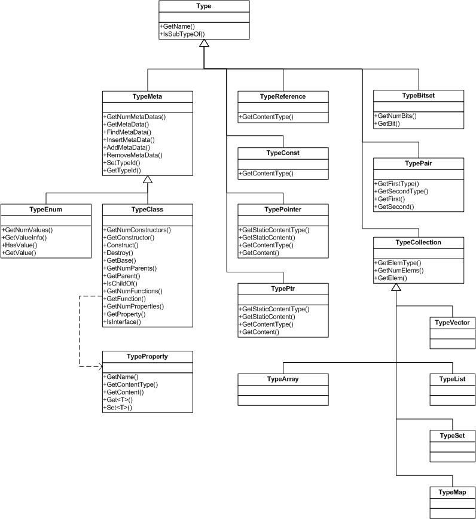

NoesisEngine Type Reflection Model (Reflection)
Reflection is the ability of a program to inspect in run-time the structure and state of the data with the possibility of modifying it. Languages as Java or C# incorporate such functionality by default. However, in C++ language it is not possible to obtain this kind of information directly.
Having reflection information in run-time allows for advanced features. For example, with the reflection information about a class, an automatic dialog could be generated to edit that class. Or it could be automatically serialized to disk.
NoesisEngine defines reflection capabilities extending the RTTI system. For each class deriving from the base Type class, new methods are implemented that expose reflection information for each kind of object. That hierarchy is exposed here and explained in detail in next sections:
In order to be able to use these classes you must include the file Reflection.h and only this one. This file includes all necessary headers.
#include <NsCore/Reflection.h>
Type
Is the base class for RTTI system. Type objects identify basic types as integers, floats, characters, etc. It provides a name for the type that can be used for debugging purposes.
const Type* intType = TypeOf<NsInt>();
NS_INFO(NST("Integers Type object name is %hs"), intType GetName());
TypeReference, TypePointer, TypePtr
References, pointers and Ptr types are identified by TypeReference, TypePointer and TypePtr objects respectively. Through those objects we can access the type of the pointed object in two ways:
- Static type: The functions GetStaticContentType() and GetStaticContent() return the static type of the pointed object.
struct A {};
const TypePointer* typePointer = TypeOf<A*>();
NS_ASSERT(typePointer->GetStaticContentType() == TypeOf<A>());
- Dynamic type: The functions GetContentType() and GetContent() return the dynamic type of the pointed object. This functions have sense in pointers to polymorphic classes, so we can get the type of the implementation class instead of the static type of the pointer.
struct B: public A {};
A* object = new B;
const TypePointer* typePointer = TypeOf<A*>();
NS_ASSERT(typePointer->GetContentType(object) == TypeOf<B>());
TypeClass
TypeClass objects identify classes, components and interfaces, and can be obtained applying TypeOf to the desired class.
const TypeClass* typeClass = TypeOf<SampleSystem>();
When you have an instance of a class, you could use RTTI object function GetClassType() instead. This functions are defined with the reflection macros also.
Ptr<IRenderSystem> renderSystem = NsGetSystem<IRenderSystem>();
const TypeClass* typeClass = renderSystem->GetClassType();
NS_INFO(NST("Current render system implementation is %hs"), typeClass->GetName());
As explained in the RTTI section, reflection macros are used to describe a class. In that document it is explained how to specify the class name and the base class. Here, we extend the macros to add more information to our classes.
Interface Implementation
Components can add the list of interfaces that they implement to their TypeClass object using the NsImpl<> tag:
class SampleSystem: public Core::BaseKernelSystem, public Core::ITickable, public ISampleSystem
{
/// ...
NS_IMPLEMENT_INLINE_REFLECTION(SampleSystem, BaseKernelSystem)
{
NsImpl<Core::ITickable>();
NsImpl<ISampleSystem>();
}
};
/// Usage
const TypeClass* typeClass = TypeOf<SampleSystem>();
const TypeClass::AncestorInfo* ancestor = typeClass->GetAncestor(TypeOf<ISampleSystem>());
NS_INFO(NST("%hs implements %hs (offset from implementation class: %ll)"),
typeClass->GetName(), ancestor->type->GetName(), ancestor->offset);
Properties
Classes and components can define also a list of properties into their TypeClass object. This is done with the NsProp tag:
class SampleSystem: public Core::BaseKernelSystem,
public Core::ITickable,
public ISampleSystem
{
/// ...
private:
Ptr<ISample> mSample;
NsBool mPaused;
NS_IMPLEMENT_INLINE_REFLECTION(SampleSystem, BaseKernelSystem)
{
NsImpl<Core::ITickable>();
NsImpl<ISampleSystem>();
NsProp("sample", &SampleSystem::mSample);
NsProp("paused", &SampleSystem::mPaused);
}
};
/// Usage
const TypeClass* typeClass = TypeOf<SampleSystem>();
const TypeProperty* pausedProp = typeClass->GetProperty(NSS("paused"));
NsBool paused = pausedProp->Get<NsBool>(sampleSystem.GetPtr());
pausedProp->Set<NsBool>(!paused);
Array properties are supported too:
struct Vec3
{
NsFloat val[3];
NS_IMPLEMENT_INLINE_REFLECTION(Vec3, Core::NoParent)
{
NsProp("val", &Vec3::val);
}
};
When it is more useful to have direct access to elements in the array you define a property for each element:
struct Vec3
{
NsFloat32 val[3];
NS_IMPLEMENT_INLINE_REFLECTION(Vec3, Core::NoParent)
{
NsProp("x", &Vec3::val, 0);
NsProp("y", &Vec3::val, 1);
NsProp("z", &Vec3::val, 2);
}
};
Properties can also be defined from a pair of get/set methods:
struct Vec3
{
NsFloat32 val[3];
NsFloat32 GetX() const { return val[0]; }
void SetX(NsFloat32 x) { val[0] = x; }
NsFloat32 GetY() const { return val[1]; }
void SetY(NsFloat32 y) { val[1] = y; }
NsFloat32 GetZ() const { return val[2]; }
void SetZ(NsFloat32 z) { val[2] = z; }
NS_IMPLEMENT_INLINE_REFLECTION(Vec3, Core::NoParent)
{
NsProp("x", &ClassTest::GetX, &ClassTest::SetX);
NsProp("y", &ClassTest::GetY, &ClassTest::SetY);
NsProp("z", &ClassTest::GetZ, &ClassTest::SetZ);
}
};
Note that get/set methods must be defined by copy for the following primitive types: NsInt, NsInt8, NsInt16, NsInt32, NsUInt, NsUInt8, NsUInt16, NsUInt32, NsFloat32, NsBool, NsChar8, NsChar16 and NsSymbol. Other primitive types: NsInt64, NsUInt64 and NsFloat64, must define its get/set methods by reference, the same as in the rest of types.
There are two ways to mark a property as read-only: using metadata or using a getter function without specifying a setter:
class Block
{
public:
NsBool IsVisible() const { return mIsVisible; }
private:
NsBool mIsVisible;
NS_IMPLEMENT_INLINE_REFLECTION(Block, Core::NoParent)
{
NsProp("IsVisible", &ClassTest::mIsVisible)
.Meta<ReadOnly>();
NsProp("IsVisible2", &ClassTest::IsVisible);
}
};
Properties are represented by TypeProperty objects. This class is the base for reflection navigation. If a property's type is not a basic type, you could inspect the contents of the property.
const TypeClass* sampleSystemType = TypeOf<SampleSystem>();
const TypeProperty* sampleProp = sampleSystemType->GetProperty(NSS("sample"));
const Type* propContentType = sampleProp->GetContentType();
void* propContent = sampleProp->GetContent(sampleSystem.GetPtr());
const TypePtr* typePtr = NsDynamicCast<const TypePtr>(propContentType);
const Type* ptrContentType = typePtr->GetContentType(propContent);
const TypeClass* sampleType = NsDynamicCast<const TypeClass>(ptrContentType);
void* sampleInstance = typePtr->GetContent(propContent);
// Now we have a TypeClass that describes the type of mSample property and
// a pointer to the ISample instance contained in sampleSystem.
// So we could inspect that instance using type reflection info.
Functions
Classes, components and interfaces can define a list of functions that are added to their TypeClass object using the NsFunc:
NS_INTERFACE ISampleSystem: public Core::Interface
{
virtual Ptr<Core::IIterator<NsSymbol> > EnumSamples() const = 0;
virtual void RunSample(NsSymbol sampleId) = 0;
virtual void PauseSample() = 0;
virtual void StopSample() = 0;
NS_IMPLEMENT_INLINE_REFLECTION(ISampleSystem, Interface)
{
NsFunc("EnumSamples", &ISampleSystem::EnumSamples);
NsFunc("RunSample", &ISampleSystem::RunSample);
NsFunc("PauseSample", &ISampleSystem::PauseSample);
NsFunc("StopSample", &ISampleSystem::StopSample);
}
};
/// Usage
const TypeClass* typeClass = TypeOf<ISampleSystem>();
const TypeClass::FunctionInfo* funcInfo = typeClass->GetFunction(NSS("StopSample"));
ParamStack paramStack;
funcInfo->function->Invoke(sampleSystem.GetPtr(), paramStack);
Constructors and Destructor
Classes and components can define a list of constructors for their TypeClass object. Constructors are used to create instances of the class or component. They are specified with the NsCtor tag:
struct Rect2D
{
NsFloat32 left;
NsFloat32 top;
NsFloat32 right;
NsFloat32 bottom;
Rect2D();
NsBool Contains(NsFloat32 x, NsFloat32 y) const;
NsBool Contains(const Point2D& point) const;
NsBool Contains(const Rect2D& rect) const;
NS_IMPLEMENT_INLINE_REFLECTION(Rect2D, Core::NoParent)
{
NsCtor("New");
NsFunc("ContainsXY", &Rect2D::ContainsXY);
NsFunc("ContainsPoint", &Rect2D::ContainsPoint);
NsFunc("ContainsRect", &Rect2D::ContainsRect);
}
};
/// Usage
const TypeClass* typeClass = TypeOf<Rect2D>();
ParamStack paramStack;
void* instance = typeClass->Construct(NSS("New"), paramStack);
// Rect2D* rect = reinterpret_cast<Rect2D*>(instance) would be valid
In the same way that with functions, constructor overloading must be disambiguated. This is done specifying the list of arguments of the constructor:
struct Rect2D
{
NsFloat32 left;
NsFloat32 top;
NsFloat32 right;
NsFloat32 bottom;
Rect2D();
Rect2D(Point2D location, Size2D size);
NsBool Contains(NsFloat32 x, NsFloat32 y) const;
NsBool Contains(const Point2D& point) const;
NsBool Contains(const Rect2D& rect) const;
NS_IMPLEMENT_INLINE_REFLECTION(Rect2D, Core::NoParent)
{
NsCtor("New");
NsCtor<Point2D,Size2D>("NewLocSize");
NsFunc("ContainsXY", &Rect2D::ContainsXY);
NsFunc("ContainsPoint", &Rect2D::ContainsPoint);
NsFunc("ContainsRect", &Rect2D::ContainsRect);
}
};
/// Usage
const TypeClass* typeClass = TypeOf<Rect2D>();
ParamStack paramStack;
Point2D location(0.0f, 25.0f);
paramStack.Push(&location);
Size2D size(300.0f, 200.0f);
paramStack.Push(&size);
void* instance = typeClass->Construct(NSS("NewLocSize"), paramStack);
TypeEnum
Enumerations are reflected in a very similar way. For example,
/// .h
namespace Noesis
{
namespace Gui
{
////////////////////////////////////////////////////////////////////////////////////////////////////
/// Specifies the display state of an element.
////////////////////////////////////////////////////////////////////////////////////////////////////
enum Visibility
{
/// Do not display the element, do not reserve space for it in layout
Visibility_Collapsed,
/// Do not display the element, but reserve space for it in layout
Visibility_Hidden,
/// Display the element
Visibility_Visible
};
}
}
NS_DECLARE_ENUM(NS_GUI_CORE_API, Noesis::Gui::Visibility)
/// .cpp
using namespace Noesis;
using namespace Noesis::Gui;
NS_IMPLEMENT_ENUM(Visibility)
{
NsMeta<Core::TypeId>("Visibility");
NsVal("Collapsed", Visibility_Collapsed);
NsVal("Hidden", Visibility_Hidden);
NsVal("Visible", Visibility_Visible);
}
/// Usage
const TypeEnum* typeEnum = TypeOf<Visibility>::Get();
NsSize numValues = typeEnum->GetNumValues();
NS_INFO(NST("Enum %hs has %u values"), typeEnum->GetName(), numValues);
for (NsSize i = 0; i < numValues; ++i)
{
const TypeEnum::ValueInfo* valueInfo = typeEnum->GetValueInfo(i);
NS_INFO(NST("Value %hs = %d"), valueInfo->id.GetStr(), valueInfo->value);
}
if (typeEnum->HasValue(NSS("Center")))
{
NS_INFO(NST("Value Center = %d"), GetValue(NSS("Center")));
}
When declaring enum reflection, macro must be placed outside any namespace.
TypeCollection
Static arrays and STL containers are identified by TypeCollection objects. This class allows the user to traverse a collection without knowing its implementation type.
void DumpCollection(const TypeClass* collection, void* instance)
{
const Type* elemType = collection->GetElemType();
NsSize numElems = collection->GetNumElems();
for (NsSize i = 0; i < numElems; ++i)
{
DumpObject(elemType, collection->GetElem(instance, i));
}
}
TypePair
This class objects identify STL pair types. It provides access to the first and second members of the pair.
std::pair<NsSymbol, NsInt> value;
value.first = NSS("Top");
second.second = VerticalAlignment_Top;
const TypePair* typePair = TypeOf<std::pair<NsSymbol, NsInt> >();
void* first = typePair->GetFirst(&value);
void* second = typePair->GetSecond(&value);